Wujudkan Wahana Waterpark Impian Bersama Kontraktor Profesional

Selamat Datang di PT. Timur Abadi Fiber. Berawal dari produsen wahana seluncur & kerajinan fiberglass, seiring perkembangan bisnis dan permintaan klien, sejak tahun 2017 kami berekspansi menjadi General Contractor Waterpark terpadu yang mencakup perencanaan sipil, sistem plumbing hidrolik, hingga fabrikasi dan instalasi seluruh wahana ramah lingkungan.
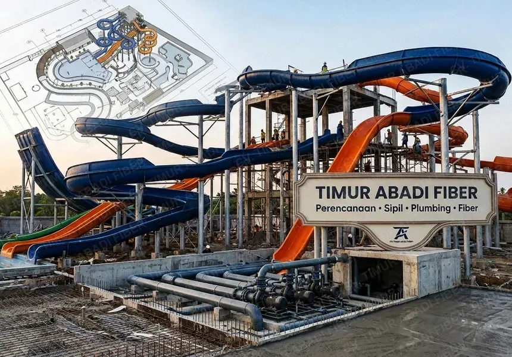
Tenaga Ahli Berpengalaman
Proyek waterpark Anda dikerjakan oleh 23 tenaga ahli bersertifikasi di bidang konstruksi sipil, hidrolik & rekayasa fiberglass.
Hasil yang Berkualitas
Orientasi utama kami adalah hasil yang kokoh, berstandar keselamatan tinggi, awet bertahun-tahun serta finishing mulus anti-luka.
24/7 Support Proyek
Kami men-support proyek Anda secara penuh 24 jam sehari dan 7 hari seminggu untuk memastikan progres berjalan sesuai target timeline.
Kami Menyediakan Layanan
Solusi terintegrasi kontraktor umum waterpark mulai dari masterplan, rekayasa struktur, hingga pemeliharaan berkala.
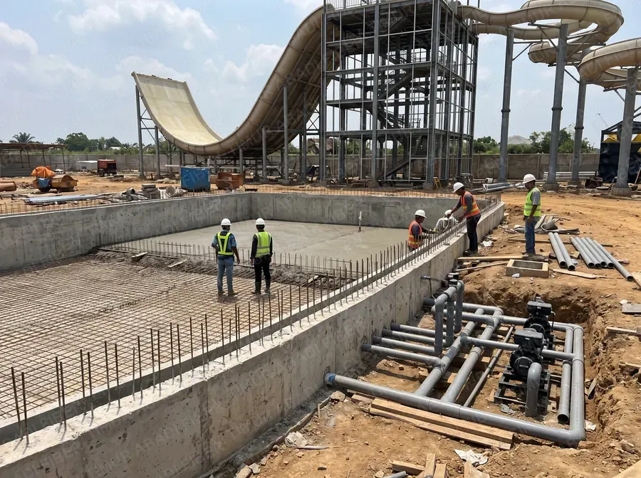
Konstruksi Waterpark
General contractor menyeluruh: pekerjaan galian kolam, pembesian, cor sipil, sistem instalasi plumbing pemipaan sirkulasi, dan mechanical-electrical waterpark.
- Pekerjaan Sipil & Pembesian Kolam
- Instalasi Pompa & Plumbing Sirkulasi
- Struktur Baja Penopang Menara Seluncur
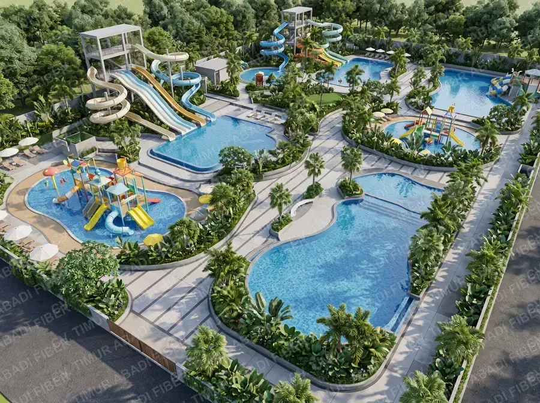
Waterpark Design (3D)
Perancangan konsep masterplan, visualisasi 3D render fotorealistik, simulasi alur luncuran, dan kalkulasi elevasi air untuk optimalisasi lahan komersial.
- Gambar Kerja DED & Arsitektur
- 3D Rendering & Animasi Visualisasi
- Penyusunan RAB Transparan & Terukur
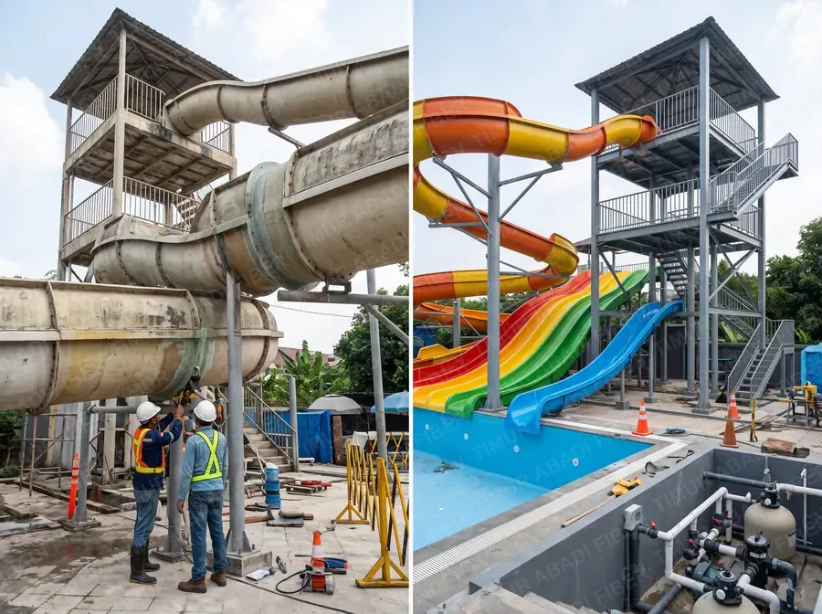
Renovasi Waterpark
Revitalisasi wahana lama, penambahan tower seluncur baru, rekondisi sambungan seluncuran bocor/longgar, serta pembaruan wahana agar kembali ramai pengunjung.
- Upgrade Slide Modern & Ekstensi Jalur
- Perbaikan Bocor Sambungan FRP
- Modernisasi Zona Anak & Kolam Ombak
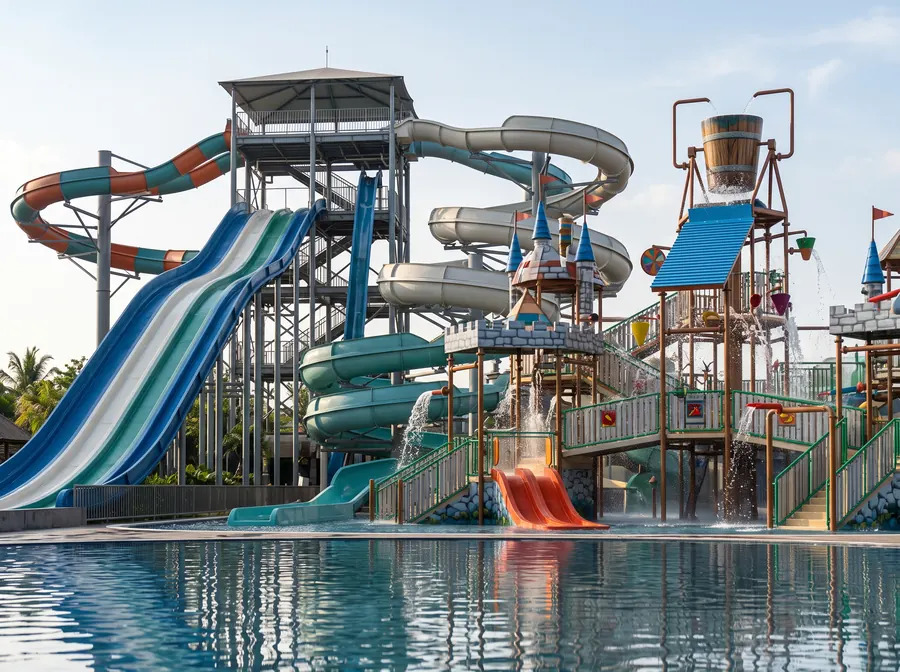
Playground & Seluncuran
Fabrikasi aneka wahana waterboom: Spiral Slide, Race Slide, Boomerang, Ember Tumpah (Giant Bucket), Tirai Air Jamur, dan Istana Air Anak (Water Playground).
- Ember Tumpah Segala Kapasitas Liter
- Water Slide Spiral & Boomerang
- Water Castle Interaktif Ramah Anak
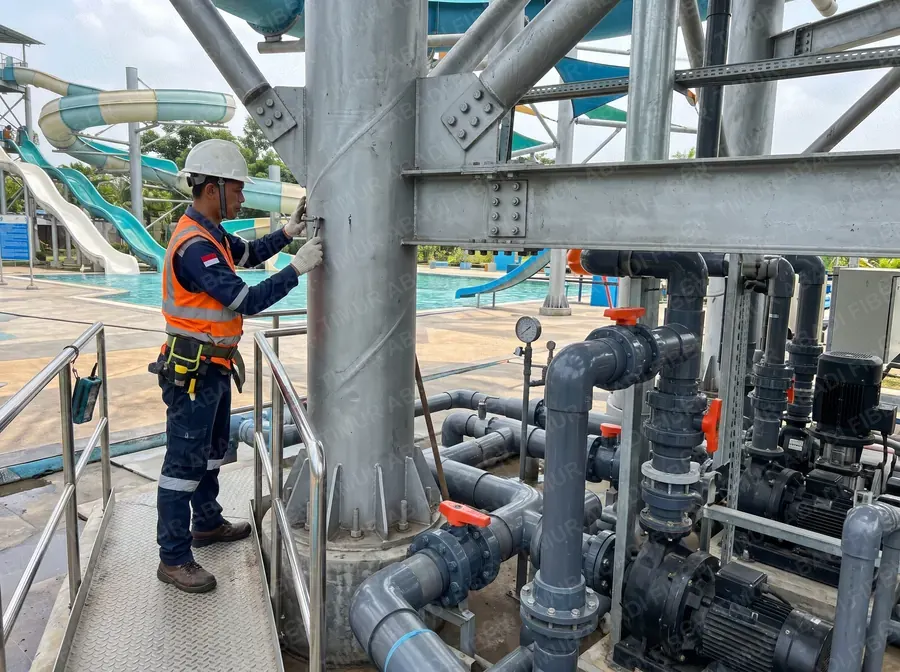
Maintenance & Servis
Perawatan periodik struktural tiang baja galvalum, pengecekan kekencangan baut pengikat, uji kebocoran pipa pompa, dan inspeksi keselamatan rutin.
- Uji Beban & Keamanan Luncur
- Kalibrasi Debit Air & Nosel Semprot
- Pengecekan Anti-Karat Tiang Penyangga
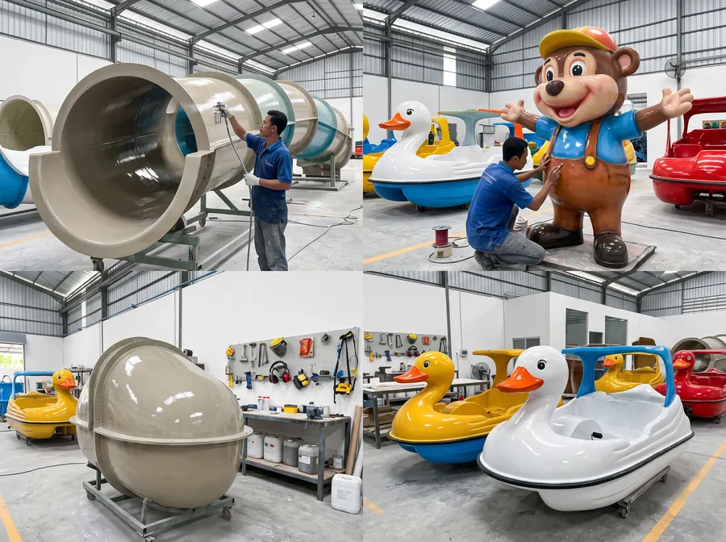
Painting & Kerajinan Fiber
Pengecatan ulang gelcoat anti-UV khusus fiberglass agar warna kembali berkilau segar, plus produksi sepeda air bebek/angsa, perahu wisata, dan ornamen patung tematik.
- Repainting Gelcoat Warna Cerah Glossy
- Sepeda Air Bebek, Angsa & Perahu Wisata
- Ornamen Maskot Karakter 3D Tematik
Daftar Klien & Proyek Unggulan
Dipercaya oleh destinasi wisata air dan theme park terbesar di berbagai penjuru Nusantara.
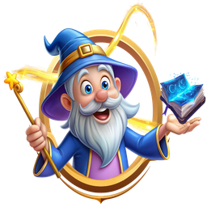
Jatim Park 1, 2, 3
Batu, Jawa Timur
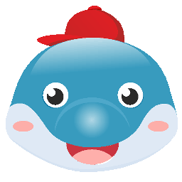
Hawai Waterpark
Malang, Jawa Timur
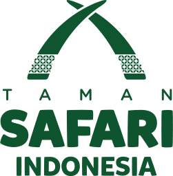
Taman Safari Prigen
Pasuruan, Jawa Timur
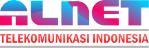
Jogja Bay
Yogyakarta
Banyuwangi Waterpark
Banyuwangi, Jawa Timur
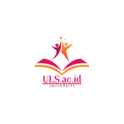
Sengkaling Waterpark
Malang, Jawa Timur
Saigon Waterpark
Pasuruan, Jawa Timur
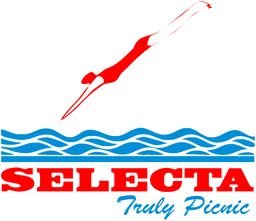
Selecta & Agrowisata
Batu, Jawa Timur
Batam Top 100
Batam, Kepulauan Riau
Kuningan Waterpark
Kuningan, Jawa Barat
Am & Singapur WTP
Medan & Giantar, Sumatera
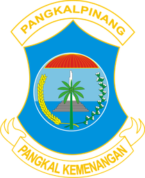
Pangkal Pinang & Tahuna
Bangka & Sulawesi Utara
Dokumentasi Proyek Klien Kami
Mencakup Pangkal Pinang WTP, Agrowisata Batu, Sengkaling WTP, Saigon WTP, Taman Safari Prigen, hingga Hawai Waterpark Malang.
Mengapa Memilih
PT. Timur Abadi Fiber?
Dengan pengalaman lebih dari 25 tahun, pengembangan konsep wahana hiburan berbasiskan fiber yang ramah lingkungan kami terapkan melalui analisa dan perencanaan struktur mendalam. Wahana hiburan sebagai sarana healing dan rekreasi bukan sekadar bangunan fisik biasa.
"Fokus kami mencakup seluruh siklus: mulai dari rekayasa sipil, instalasi pompa sirkulasi hidrolik, hingga gelcoat fiberglass presisi tahan kaporit dan sengatan matahari."
Material FRP Ramah Lingkungan
Ketebalan serat kaca bertingkat dilapisi pelindung anti-UV, membuat warna awet berkilau serta tahan bahan kimia air kolam.
Struktur Baja Berstandar
Penyangga baja dirancang dengan kalkulasi teknis beban dinamis luncuran pengunjung dan tahan korosi lingkungan tropis.
Finishing Halus & Anti-Luka
Sambungan gelcoat presisi tanpa nat kasar, menjamin keselamatan pengunjung saat meluncur tanpa risiko goresan kulit.
24/7 Support & Bebas Perantara
Komunikasi transparan langsung dengan tim pabrik dan kontraktor kami, didukung monitoring 24 jam untuk ketepatan waktu proyek.
Alur Proses Kerja Kami
Dari konsep visual, perencanaan sipil plumbing, hingga wahana siap dioperasikan menyambut ribuan wisatawan.
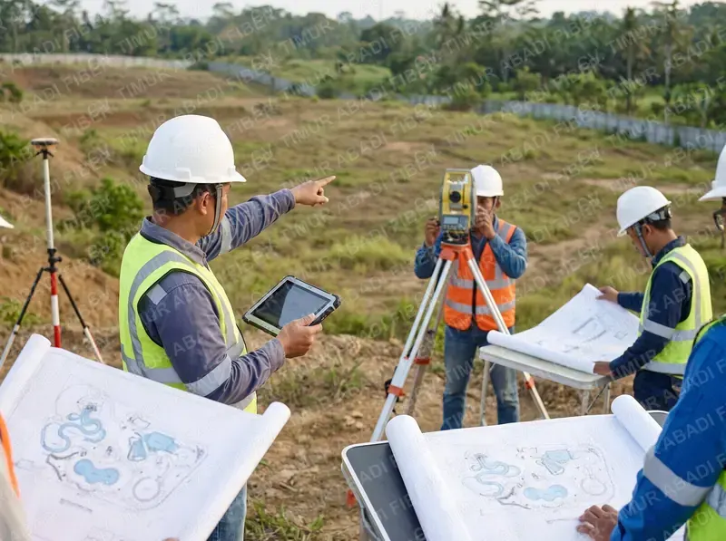
1Konsultasi & Survei
Diskusi kontur lahan, target kapasitas pengunjung, dan estimasi rencana anggaran.
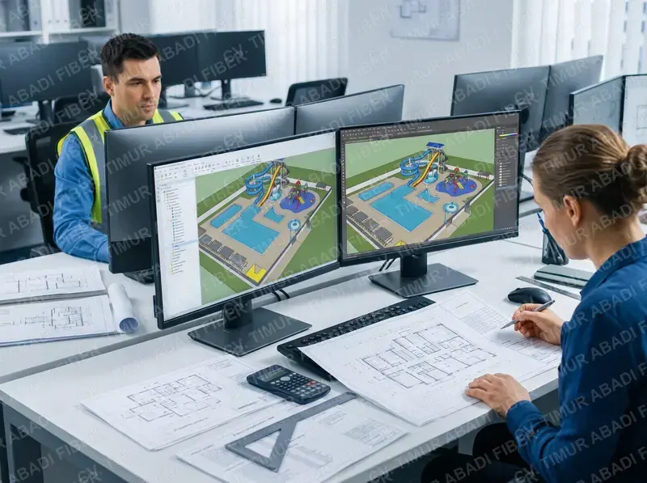
2Desain 3D & RAB
Pembuatan blueprint 3D visual, gambar arsitektur sipil, instalasi plumbing, dan rincian RAB.
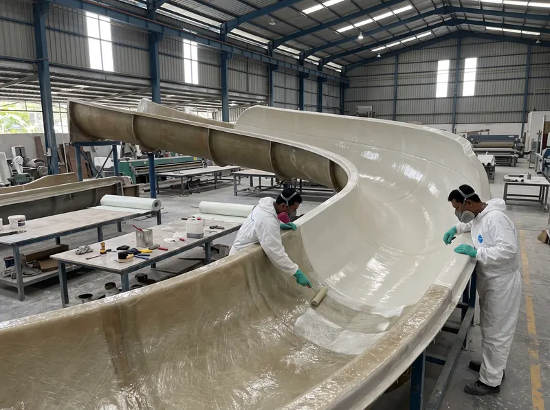
3Fabrikasi Pabrik
Pencetakan komponen fiberglass di workshop dengan quality control ketat bahan resin pilihan.
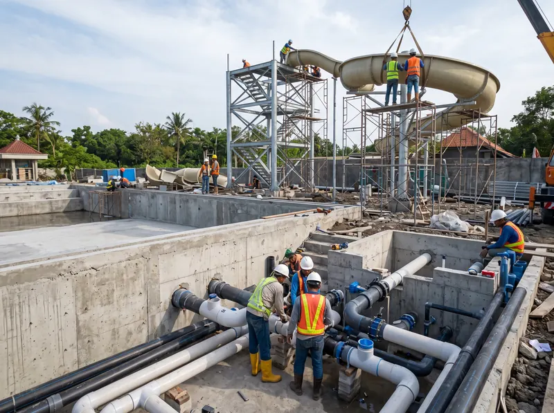
4Sipil, Plumbing & Instalasi
Pengiriman ke seluruh Indonesia & perakitan langsung oleh 23 teknisi ahli berpengalaman.
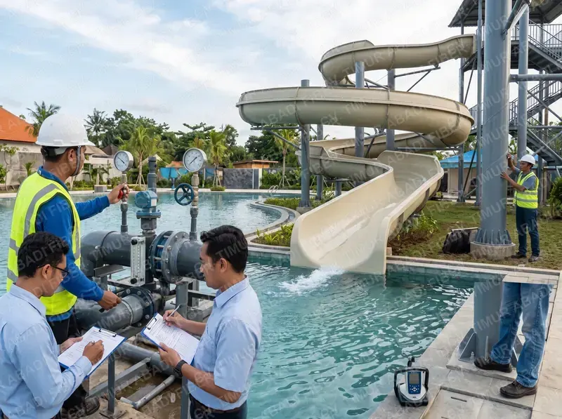
5Uji Kelayakan & Serah Terima
Commissioning debit pompa air, uji luncur beban keamanan, dan garansi resmi.
Formulir Booking & Konsultasi Proyek
Dapatkan konsultasi teknis, estimasi RAB awal, dan jadwal survei lokasi dari tim ahli kami.
Frequently Asked Questions
Yang paling sering ditanyakan klien sebelum memulai proyek waterpark.
Berapa pengalaman PT. Timur Abadi Fiber dalam konstruksi waterpark?+
Berpengalaman 25+ tahun di industri fiberglass, dan sejak 2017 bergerak sebagai General Contractor Waterpark terpadu dengan 21+ klien skala nasional seperti Jatim Park, Hawai Waterpark Malang, dan Taman Safari Prigen.
Di mana lokasi pabrik & kantor PT. Timur Abadi Fiber?+
Kantor dan pabrik kami berada di Jl. Kimangun Sarkoro 31D No. 18, Tulungagung, Jawa Timur. Kami melayani kontrak konstruksi waterpark ke seluruh Indonesia — dari Sumatera, Jawa, hingga Sulawesi.
Apakah melayani pembangunan waterpark di luar Jawa Timur?+
Ya. Kami melayani proyek di seluruh Indonesia — termasuk Kuningan (Jawa Barat), Batam (Kepulauan Riau), Medan (Sumatera), Pangkal Pinang (Bangka), dan Sulawesi Utara. Tim teknisi kami yang datang ke lokasi.
Layanan apa saja yang tersedia?+
Enam layanan utama: konstruksi waterpark (general contractor), desain 3D & blueprint, renovasi & penambahan wahana, produksi water slide & playground FRP, maintenance berkala, serta painting gelcoat & kerajinan fiberglass custom.
Bagaimana cara meminta konsultasi atau survei lokasi?+
Isi formulir booking di website ini, atau hubungi WhatsApp resmi kami di +62 812-3824-2926 (fast respon) / +62 813-5713-0170 (konsultasi teknis). Tim kami merespon dalam 1x24 jam pada jam layanan 08:00-16:00 WIB.